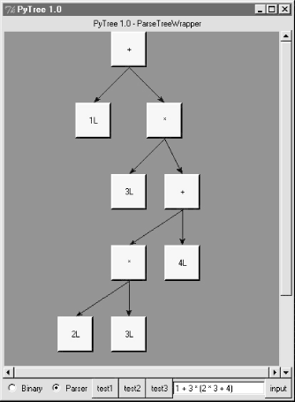
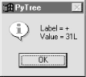
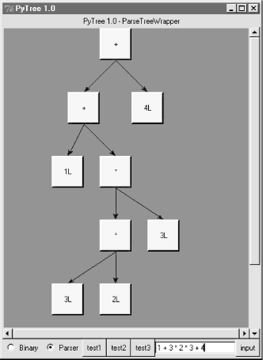
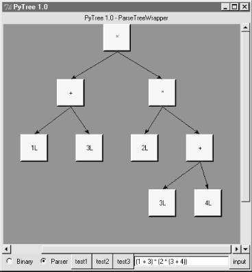
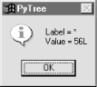
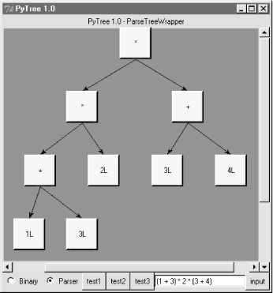
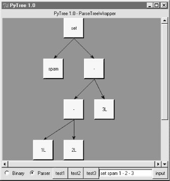

| I l@ve RuBoard |
|
18.6 Hand-Coded ParsersSince Python is a general purpose programming language, it's also reasonable to consider writing a hand-coded parser. For instance, recursive descent parsing is a fairly well-known technique for analyzing language-based information. Since Python is a very high-level language, writing the parser itself is usually easier than it would be in a traditional language like C or C++. To illustrate, this section develops a custom parser for a simple grammar: it parses and evaluates arithmetic expression strings. This example also demonstrates the utility of Python as a general-purpose programming language. Although Python is often used as a frontend or rapid development language, it's also useful for the kinds of things we'd normally write in a systems development language like C or C++. 18.6.1 The Expression GrammarThe grammar our parser will recognize can be described as follows: goal -> <expr> END [number, variable, ( ]
goal -> <assign> END [set]
assign -> 'set' <variable> <expr> [set]
expr -> <factor> <expr-tail> [number, variable, ( ]
expr-tail -> ^ [END, ) ]
expr-tail -> '+' <factor> <expr-tail> [+]
expr-tail -> '-' <factor> <expr-tail> [-]
factor -> <term> <factor-tail> [number, variable, ( ]
factor-tail -> ^ [+, -, END, ) ]
factor-tail -> '*' <term> <factor-tail> [*]
factor-tail -> '/' <term> <factor-tail> [/]
term -> <number> [number]
term -> <variable> [variable]
term -> '(' <expr> ')' [(]
tokens: (, ), num, var, -, +, /, *, set, end
This is a fairly typical grammar for a simple expression language, and it allows for arbitrary expression nesting (some example expressions appear at the end of the testparser module listing in Example 18-11). Strings to be parsed are either an expression or an assignment to a variable name (set). Expressions involve numbers, variables, and the operators +, -, *, and /. Because factor is nested in expr in the grammar, * and / have higher precedence (i.e., bind tighter) than + and -. Expressions can be enclosed in parentheses to override precedence, and all operators are left associative -- that is, group on the left (e.g., 1-2-3 is treated the same as (1-2)-3). Tokens are just the most primitive components of the expression language. Each grammar rule earlier is followed in square brackets by a list of tokens used to select it. In recursive descent parsing, we determine the set of tokens that can possibly start a rule's substring, and use that information to predict which rule will work ahead of time. For rules that iterate (the -tail rules), we use the set of possibly following tokens to know when to stop. Typically, tokens are recognized by a string processor (a "scanner"), and a higher-level processor (a "parser") uses the token stream to predict and step through grammar rules and substrings. 18.6.2 The Parser's CodeThe system is structured as two modules, holding two classes:
The parser is also responsible for computing the expression's value and testing the system. In this version, the parser evaluates the expression while it is being parsed. To use the system, we create a parser with an input string and call its parse method. We can also call parse again later with a new expression string. There's a deliberate division of labor here. The scanner extracts tokens from the string, but knows nothing about the grammar. The parser handles the grammar, but is naive about the string itself. This modular structure keeps the code relatively simple. And it's another example of the OOP composition relationship at work: parsers embed and delegate to scanners. The module in Example 18-9 implements the lexical analysis task -- detecting the expression's basic tokens by scanning the text string left to right on demand. Notice that this is all straightforward logic here; such analysis can sometimes be performed with regular expressions instead (described earlier), but the pattern needed to detect and extract tokens in this example would be too complex and fragile for my tastes. If your tastes vary, try recoding this module with re. Example 18-9. PP2E\Lang\Parser\scanner.py####################################################
# the scanner (lexical analyser)
####################################################
import string
SyntaxError = 'SyntaxError' # local errors
LexicalError = 'LexicalError'
class Scanner:
def __init__(self, text):
self.next = 0
self.text = text + '\0'
def newtext(self, text):
Scanner.__init__(self, text)
def showerror(self):
print '=> ', self.text
print '=> ', (' ' * self.start) + '^'
def match(self, token):
if self.token != token:
raise SyntaxError, [token]
else:
value = self.value
if self.token != '\0':
self.scan( ) # next token/value
return value # return prior value
def scan(self):
self.value = None
ix = self.next
while self.text[ix] in string.whitespace:
ix = ix+1
self.start = ix
if self.text[ix] in ['(', ')', '-', '+', '/', '*', '\0']:
self.token = self.text[ix]
ix = ix+1
elif self.text[ix] in string.digits:
str = ''
while self.text[ix] in string.digits:
str = str + self.text[ix]
ix = ix+1
if self.text[ix] == '.':
str = str + '.'
ix = ix+1
while self.text[ix] in string.digits:
str = str + self.text[ix]
ix = ix+1
self.token = 'num'
self.value = string.atof(str)
else:
self.token = 'num'
self.value = string.atol(str)
elif self.text[ix] in string.letters:
str = ''
while self.text[ix] in (string.digits + string.letters):
str = str + self.text[ix]
ix = ix+1
if string.lower(str) == 'set':
self.token = 'set'
else:
self.token = 'var'
self.value = str
else:
raise LexicalError
self.next = ix
The parser module's class creates and embeds a scanner for its lexical chores, and handles interpretation of the expression grammar's rules and evaluation of the expression's result, as shown in Example 18-10. Example 18-10. PP2E\Lang\Parser\parser1.py########################################################
# the parser (syntax analyser, evaluates during parse)
########################################################
UndefinedError = 'UndefinedError'
from scanner import Scanner, LexicalError, SyntaxError
class Parser:
def __init__(self, text=''):
self.lex = Scanner(text) # embed a scanner
self.vars = {'pi':3.14159} # add a variable
def parse(self, *text):
if text: # main entry-point
self.lex.newtext(text[0]) # reuse this parser?
try:
self.lex.scan( ) # get first token
self.Goal( ) # parse a sentence
except SyntaxError:
print 'Syntax Error at column:', self.lex.start
self.lex.showerror( )
except LexicalError:
print 'Lexical Error at column:', self.lex.start
self.lex.showerror( )
except UndefinedError, name:
print "'%s' is undefined at column:" % name, self.lex.start
self.lex.showerror( )
def Goal(self):
if self.lex.token in ['num', 'var', '(']:
val = self.Expr( )
self.lex.match('\0') # expression?
print val
elif self.lex.token == 'set': # set command?
self.Assign( )
self.lex.match('\0')
else:
raise SyntaxError
def Assign(self):
self.lex.match('set')
var = self.lex.match('var')
val = self.Expr( )
self.vars[var] = val # assign name in dict
def Expr(self):
left = self.Factor( )
while 1:
if self.lex.token in ['\0', ')']:
return left
elif self.lex.token == '+':
self.lex.scan( )
left = left + self.Factor( )
elif self.lex.token == '-':
self.lex.scan( )
left = left - self.Factor( )
else:
raise SyntaxError
def Factor(self):
left = self.Term( )
while 1:
if self.lex.token in ['+', '-', '\0', ')']:
return left
elif self.lex.token == '*':
self.lex.scan( )
left = left * self.Term( )
elif self.lex.token == '/':
self.lex.scan( )
left = left / self.Term( )
else:
raise SyntaxError
def Term(self):
if self.lex.token == 'num':
val = self.lex.match('num') # numbers
return val
elif self.lex.token == 'var':
if self.vars.has_key(self.lex.value):
val = self.vars[self.lex.value] # lookup name's value
self.lex.scan( )
return val
else:
raise UndefinedError, self.lex.value
elif self.lex.token == '(':
self.lex.scan( )
val = self.Expr( ) # sub-expression
self.lex.match(')')
return val
else:
raise SyntaxError
if __name__ == '__main__':
import testparser # self-test code
testparser.test(Parser, 'parser1') # test local Parser
If you study this code closely, you'll notice that the parser keeps a dictionary (self.vars) to manage variable names: they're stored in the dictionary on a set command and fetched from it when they appear in an expression. Tokens are represented as strings, with an optional associated value (a numeric value for numbers and a string for variable names). The parser uses iteration (while loops) instead of recursion, for the expr-tail and factor-tail rules. Other than this optimization, the rules of the grammar map directly onto parser methods: tokens become calls to the scanner, and nested rule references become calls to other methods. When file parser1.py is run as a top-level program, its self-test code is executed, which in turn simply runs a canned test in the module shown in Example 18-11. Note that all integer math uses Python long integers (unlimited precision integers), because the scanner converts numbers to strings with string.atol. Also notice that mixed integer/floating-point operations cast up to floating point since Python operators are used to do the actual calculations. Example 18-11. PP2E\Lang\Parser\testparser.py####################################################
# parser test code
####################################################
def test(ParserClass, msg):
print msg, ParserClass
x = ParserClass('4 / 2 + 3') # allow different Parser's
x.parse( )
x.parse('3 + 4 / 2') # like eval('3 + 4 / 2')...
x.parse('(3 + 4) / 2')
x.parse('4 / (2 + 3)')
x.parse('4.0 / (2 + 3)')
x.parse('4 / (2.0 + 3)')
x.parse('4.0 / 2 * 3')
x.parse('(4.0 / 2) * 3')
x.parse('4.0 / (2 * 3)')
x.parse('(((3))) + 1')
y = ParserClass( )
y.parse('set a 4 / 2 + 1')
y.parse('a * 3')
y.parse('set b 12 / a')
y.parse('b')
z = ParserClass( )
z.parse('set a 99')
z.parse('set a a + 1')
z.parse('a')
z = ParserClass( )
z.parse('pi')
z.parse('2 * pi')
z.parse('1.234 + 2.1')
def interact(ParserClass): # command-line entry
print ParserClass
x = ParserClass( )
while 1:
cmd = raw_input('Enter=> ')
if cmd == 'stop':
break
x.parse(cmd)
Correlate the following results to print statements in the self-test module: C:\...\PP2E\Lang\Parser>python parser1.py parser1 __main__.Parser 5L 5L 3L 0L 0.8 0.8 6.0 6.0 0.666666666667 4L 9L 4L 100L 3.14159 6.28318 3.334 As usual, we can also test and use the system interactively: % python
>>> import parser1
>>> x = parser1.Parser( )
>>> x.parse('1 + 2')
3L
Error cases are trapped and reported: >>> x.parse('1 + a')
'a' is undefined at column: 4
=> 1 + a
=> ^
>>> x.parse('1+a+2')
'a' is undefined at column: 2
=> 1+a+2
=> ^
>>> x.parse('1 * 2 $')
Lexical Error at column: 6
=> 1 * 2 $
=> ^
>>> x.parse('1 * - 1')
Syntax Error at column: 4
=> 1 * - 1
=> ^
>>> x.parse('1 * (9')
Syntax Error at column: 6
=> 1 * (9
=> ^
Pathologically big numbers are handled well, because Python's built-in objects and operators are used along the way: >>> x.parse('888888888888888888888888888888888888888888888.9999999')
8.88888888889e+44
>>> x.parse('99999999999999999999999999999999999999999 + 2')
100000000000000000000000000000000000000001L
>>> x.parse('999999999999999999999999999999.88888888888 + 1.1')
1e+30
In addition, there is an interactive loop interface in the testparser module, if you want to use the parser as a simple command-line calculator (or if you get tired of typing parser method calls). Pass the Parser class, so testparser can make one of its own: >>> import testparser >>> testparser.interact(parser1.Parser) Enter=> 4 * 3 + 5 17L Enter=> 5 + 4 * 3 17L Enter=> (5 + 4) * 3 27L Enter=> set a 99 Enter=> set b 66 Enter=> a + b 165L Enter=> # + 1 Lexical Error at column: 0 => # + 1 => ^ Enter=> a * b + c 'c' is undefined at column: 8 => a * b + c => ^ Enter=> a * b * + c Syntax Error at column: 8 => a * b * + c => ^ Enter=> a 99L Enter=> a * a * a 970299L Enter=> stop >>>
18.6.3 Adding a Parse Tree InterpreterOne weakness in the parser1 program is that it embeds expression evaluation logic in the parsing logic: the result is computed while the string is being parsed. This makes evaluation quick, but it can also make it difficult to modify the code, especially in larger systems. To simplify, we could restructure the program to keep expression parsing and evaluation separate. Instead of evaluating the string, the parser can build up an intermediate representation of it that can be evaluated later. As an added incentive, building the representation separately makes it available to other analysis tools (e.g., optimizers, viewers, and so on). Example 18-12 shows a variant of parser1 that implements this idea. The parser analyzes the string and builds up a parse tree -- that is, a tree of class instances that represents the expression and that may be evaluated in a separate step. The parse tree is built from classes that "know" how to evaluate themselves: to compute the expression, we just ask the tree to evaluate itself. Root nodes in the tree ask their children to evaluate themselves and then combine the results by applying a single operator. In effect, evaluation in this version is simply a recursive traversal of a tree of embedded class instances constructed by the parser. Example 18-12. PP2E\Lang\Parser\parser2.pyTraceDefault = 0
UndefinedError = "UndefinedError"
from scanner import Scanner, SyntaxError, LexicalError
####################################################
# the interpreter (a smart objects tree)
####################################################
class TreeNode:
def validate(self, dict): # default error check
pass
def apply(self, dict): # default evaluator
pass
def trace(self, level): # default unparser
print '.'*level + '<empty>'
# ROOTS
class BinaryNode(TreeNode):
def __init__(self, left, right): # inherited methods
self.left, self.right = left, right # left/right branches
def validate(self, dict):
self.left.validate(dict) # recurse down branches
self.right.validate(dict)
def trace(self, level):
print '.'*level + '[' + self.label + ']'
self.left.trace(level+3)
self.right.trace(level+3)
class TimesNode(BinaryNode):
label = '*'
def apply(self, dict):
return self.left.apply(dict) * self.right.apply(dict)
class DivideNode(BinaryNode):
label = '/'
def apply(self, dict):
return self.left.apply(dict) / self.right.apply(dict)
class PlusNode(BinaryNode):
label = '+'
def apply(self, dict):
return self.left.apply(dict) + self.right.apply(dict)
class MinusNode(BinaryNode):
label = '-'
def apply(self, dict):
return self.left.apply(dict) - self.right.apply(dict)
# LEAVES
class NumNode(TreeNode):
def __init__(self, num):
self.num = num # already numeric
def apply(self, dict): # use default validate
return self.num
def trace(self, level):
print '.'*level + `self.num`
class VarNode(TreeNode):
def __init__(self, text, start):
self.name = text # variable name
self.column = start # column for errors
def validate(self, dict):
if not dict.has_key(self.name):
raise UndefinedError, (self.name, self.column)
def apply(self, dict):
return dict[self.name] # validate before apply
def assign(self, value, dict):
dict[self.name] = value # local extension
def trace(self, level):
print '.'*level + self.name
# COMPOSITES
class AssignNode(TreeNode):
def __init__(self, var, val):
self.var, self.val = var, val
def validate(self, dict):
self.val.validate(dict) # don't validate var
def apply(self, dict):
self.var.assign( self.val.apply(dict), dict )
def trace(self, level):
print '.'*level + 'set '
self.var.trace(level + 3)
self.val.trace(level + 3)
####################################################
# the parser (syntax analyser, tree builder)
####################################################
class Parser:
def __init__(self, text=''):
self.lex = Scanner(text) # make a scanner
self.vars = {'pi':3.14159} # add constants
self.traceme = TraceDefault
def parse(self, *text): # external interface
if text:
self.lex.newtext(text[0]) # reuse with new text
tree = self.analyse( ) # parse string
if tree:
if self.traceme: # dump parse-tree?
print; tree.trace(0)
if self.errorCheck(tree): # check names
self.interpret(tree) # evaluate tree
def analyse(self):
try:
self.lex.scan( ) # get first token
return self.Goal( ) # build a parse-tree
except SyntaxError:
print 'Syntax Error at column:', self.lex.start
self.lex.showerror( )
except LexicalError:
print 'Lexical Error at column:', self.lex.start
self.lex.showerror( )
def errorCheck(self, tree):
try:
tree.validate(self.vars) # error checker
return 'ok'
except UndefinedError, varinfo:
print "'%s' is undefined at column: %d" % varinfo
self.lex.start = varinfo[1]
self.lex.showerror( ) # returns None
def interpret(self, tree):
result = tree.apply(self.vars) # tree evals itself
if result != None: # ignore 'set' result
print result
def Goal(self):
if self.lex.token in ['num', 'var', '(']:
tree = self.Expr( )
self.lex.match('\0')
return tree
elif self.lex.token == 'set':
tree = self.Assign( )
self.lex.match('\0')
return tree
else:
raise SyntaxError
def Assign(self):
self.lex.match('set')
vartree = VarNode(self.lex.value, self.lex.start)
self.lex.match('var')
valtree = self.Expr( )
return AssignNode(vartree, valtree) # two subtrees
def Expr(self):
left = self.Factor( ) # left subtree
while 1:
if self.lex.token in ['\0', ')']:
return left
elif self.lex.token == '+':
self.lex.scan( )
left = PlusNode(left, self.Factor( )) # add root-node
elif self.lex.token == '-':
self.lex.scan( )
left = MinusNode(left, self.Factor( )) # grows up/right
else:
raise SyntaxError
def Factor(self):
left = self.Term( )
while 1:
if self.lex.token in ['+', '-', '\0', ')']:
return left
elif self.lex.token == '*':
self.lex.scan( )
left = TimesNode(left, self.Term( ))
elif self.lex.token == '/':
self.lex.scan( )
left = DivideNode(left, self.Term( ))
else:
raise SyntaxError
def Term(self):
if self.lex.token == 'num':
leaf = NumNode(self.lex.match('num'))
return leaf
elif self.lex.token == 'var':
leaf = VarNode(self.lex.value, self.lex.start)
self.lex.scan( )
return leaf
elif self.lex.token == '(':
self.lex.scan( )
tree = self.Expr( )
self.lex.match(')')
return tree
else:
raise SyntaxError
####################################################
# self-test code: use my parser, parser1's tester
####################################################
if __name__ == '__main__':
import testparser
testparser.test(Parser, 'parser2') # run with Parser class here
When parser2 is run as a top-level program, we get the same test code output as for parser1. In fact, it reuses the same test code: both parsers pass in their parser class object to testparser.test. And since classes are objects, we can also pass this version of the parser to testparser's interactive loop: testparser.interact(parser2.Parser). The new parser's external behavior is identical to that of the original. Notice that the new parser reuses the same scanner module, too. To catch errors raised by scanner, it also imports the specific strings that identify the scanner's exceptions. The scanner and parser can both raise exceptions on errors (lexical errors, syntax errors, and undefined name errors). They're caught at the top level of the parser, and end the current parse. There's no need to set and check status flags to terminate the recursion. Since math is done using long integers, floating-point numbers, and Python's operators, there's usually no need to trap numeric overflow or underflow errors. But as is, the parser doesn't handle errors like division by zero: they make the parser system exit with a Python stack dump. Uncovering the cause and fix for this is left as an exercise. 18.6.4 Parse Tree StructureThe intermediate representation of an expression is a tree of class instances, whose shape reflects the order of operator evaluation. This parser also has logic to print an indented listing of the constructed parse tree if the traceme attribute is set. Indentation gives the nesting of subtrees, and binary operators list left subtrees first. For example: % python
>>> import parser2
>>> p = parser2.Parser( )
>>> p.traceme = 1
>>> p.parse('5 + 4 * 2')
[+]
...5L
...[*]
......4L
......2L
13L
When this tree is evaluated, the apply method recursively evaluates subtrees and applies root operators to their results. Here, * is evaluated before +, since it's lower in the tree. The Factor method consumes the * substring before returning a right subtree to Expr: >>> p.parse('5 * 4 - 2')
[-]
...[*]
......5L
......4L
...2L
18L
In this example, * is evaluated before -. The Factor method loops though a substring of * and / expressions before returning the resulting left subtree to Expr: >>> p.parse('1 + 3 * (2 * 3 + 4)')
[+]
...1L
...[*]
......3L
......[+]
.........[*]
............2L
............3L
.........4L
31L
Trees are made of nested class instances. From an OOP perspective, it's another way to use composition. Since tree nodes are just class instances, this tree could be created and evaluated manually, too: PlusNode( NumNode(1),
TimesNode( NumNode(3),
PlusNode( TimesNode(NumNode(2), NumNode(3)),
NumNode(4) ))).apply({})
But we might as well let the parser build it for us (Python is not that much like Lisp, despite what you may have heard). 18.6.5 Exploring Parse Trees with PytreeBut wait -- there is a better way to explore parse tree structures. Figure 18-1 shows the parse tree generated for string "1 + 3 * (2 * 3 + 4)", displayed in PyTree, the tree visualization GUI presented at the end of the previous chapter. This only works because the parser2 module builds the parse tree explicitly (parser1 evaluates during a parse instead), and because PyTree's code is generic and reusable. Figure 18-1. Parse tree built for 1 + 3 * (2 * 3 + 4)If you read the last chapter, you'll recall that PyTree can draw most any tree data structure, but it is preconfigured to handle binary search trees and the parse trees we're studying in this chapter. You might also remember that clicking on nodes in a displayed parse tree evaluates the subtree rooted there. Figure 18-2 shows the pop-up generated after clicking the tree's root node (you get different results if you click other parts of tree, because smaller subtrees are evaluated). Figure 18-2. Clicking the root node to evaluate a treePyTree makes it easy to learn about and experiment with the parser. To determine the tree shape produced for a given expression, start PyTree, click on its Parser radiobutton, type the expression in the input field at the bottom, and press "input" (or your Enter key). The parser class is run to generate a tree from your input, and the GUI displays the result. For instance, Figure 18-3 sketches the parse tree generated if we remove the parentheses from the first expression in the input field. The root node evaluates to 23 this time, due to the different shape's evaluation order. Figure 18-3. Parse tree for 1 + 3 * 2 * 3 + 4, result=23To generate an even more different shape, try introducing more parentheses to the expression and hitting the Enter key again. Figure 18-4 shows a much flatter tree structure produced by adding a few parentheses to override operator precedence. Because these parentheses change the tree shape, they also change the expression's overall result again. Figure 18-5 shows the result pop-up after clicking the root node in this display. Figure 18-4. Parse tree built for "(1 + 3) * (2 * ( 3 + 4))"Figure 18-5. Clicking and evaluating the root nodeDepending upon the operators used within an expression, some very differently shaped trees yield the same result when evaluated. For instance, Figure 18-6 shows a more left-heavy tree generated from a different expression string that evaluates to 56 nevertheless. Figure 18-6. Parse tree for "(1 + 3) * 2 * ( 3 + 4)", result=56Finally, Figure 18-7 shows a parsed assignment statement; clicking the "set" root assigns variable spam, and clicking node spam then evaluates to -4. If you find the parser puzzling, try running PyTree like this on your computer to get a better feel for the parsing process. (I'd like to show more example trees, but I ran out of page real estate at this point in the book.) Figure 18-7. Assignment, left-grouping: "set spam 1 - 2 - 3"18.6.6 Parsers Versus PythonThe hand-coded parser programs shown earlier illustrate some interesting concepts and underscore the power of Python for general-purpose programming. Depending on your job description, they may also be typical of the sort of thing you'd write regularly in a traditional language like C. Parsers are an important component in a wide variety of applications, but in some cases, they're not as necessary as you might think. Let me explain why. So far, we started with an expression parser and added a parse tree interpreter to make the code easier to modify. As is, the parser works, but it may be slow compared to a C implementation. If the parser is used frequently, we could speed it up by moving parts to C extension modules. For instance, the scanner might be moved to C initially, since it's often called from the parser. Ultimately, we might add components to the grammar that allow expressions to access application-specific variables and functions. All of the these steps constitute good engineering. But depending on your application, this approach may not be the best one in Python. The easiest way to evaluate input expressions in Python is often to let Python do it, by calling the eval built-in function. In fact, we can usually replace the entire expression evaluation program with one function call. The next example will demonstrate how this is done. More importantly, the next section underscores a core idea behind the language: if you already have an extensible, embeddable, high-level language system, why invent another? Python itself can often satisfy language-based component needs. |
| I l@ve RuBoard |
|